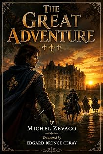

La Grande Aventure
by Michel Zévaco · translated by Edgard Bronce-Ceraypar Michel Zévaco · traduit par Edgard Bronce-Ceray
The bookLe livre
The house of Master Laurent des Archelles is one of the handsomest in l'Isle-Adam: a square courtyard, stables and barns, high walls with a turret at each corner. The des Archelles have been royal notaries from father to son, honourably and peaceably, for generations. Zévaco opens on that solidity because he intends to take it apart.
La maison de maître Laurent des Archelles est l'une des plus belles de L'Isle-Adam : une cour carrée, des écuries et des granges, de hauts murs flanqués d'une tourelle à chaque angle. Les des Archelles sont notaires royaux de père en fils, honorablement et paisiblement, depuis des générations. Zévaco ouvre sur cette solidité parce qu'il compte la démonter.
From the opening pagesLes premières pages
———
The house of Master Laurent des Archelles had a very fine appearance.
It was, most certainly, one of the handsomest and most substantial dwellings in l'Isle-Adam, where the des Archelles, from father to son, held the honorable and peaceable office of royal notaries. Situated at the far end of a square courtyard, two sides of which were taken up by the outbuildings—stables, barns, sheepfolds, cowshed, and the like—girdled by high, thick walls flanked at the corners by four turrets crowned with sharp-pointed roofs, with, at its center, its great round-arched gate propped between two stout square pillars, it gave itself the air of a little fortress. This was hardly to be wondered at, seeing that it had been built toward the end of the previous century by Master Laurent's grandfather, and that, moreover, it stood somewhat isolated.
A widower, childless, nearing his fiftieth year, of very robust appearance and rather grave manner, as befitted a worthy tabellion conscious of his worth and his importance, and, what is more, of authentic nobility of the robe, Master Laurent des Archelles lived, in his house, surrounded by universal respect. A most well-deserved respect, which went not to his office but rather to his person; he was, in the fullest sense of the word, a good man and a man of honor.
By day, under his vigilant direction, his clerks blackened sheets of parchment, dispatched drafts and contracts, and drew up the deeds of all the nobility of the Île-de-France. For that whole nobility, quite as much as the bourgeoisie and the common folk, held the highest esteem for his professional knowledge and his impeccable probity. So much so that Monseigneur the Prince de Montcapet—assuredly the most opulent lord of the region, who had royal blood in his veins, whom His Majesty Charles IX called "my cousin"—the Prince de Montcapet honored him with an old and unshakable friendship, and the aged Constable, Anne de Montmorency, presently lord and master of the barony of l'Isle-Adam, showed him a deference it was not in his habits to lavish.
When evening came, their daily task finished, the scribes withdrew, and Master des Archelles remained alone with his one servant and a young man in whom he had the most complete confidence, whom he cherished and treated rather as though he had been his own son, and who had no clearly defined employment in the house—or rather who applied himself there to all sorts of tasks, without, however, going so far as to lower himself to domestic chores.
That evening, a day in May of the year of grace 1565, one of those delicious spring evenings all steeped in the very sweet perfume of the trees blossoming in gigantic bouquets of flowers, Master des Archelles himself closed, bolted, padlocked, and barred the high, massive oaken door bound with iron, adorned with its escutcheon-plates surmounted by his coat of arms, as he did each evening before going to take a rest well earned after a day of labor.
This care meticulously attended to, he crossed the courtyard with his grave step, gave, in passing, a caress to the two guard dogs that rubbed against his legs, and came to a halt at the foot of the front steps. He cast a last glance over the outbuildings, made certain that all was properly shut, caressed once more the two dogs that leaped about him and seemed to say to him: "Fear nothing, we are here and we keep good watch," and at last entered the house, whose door he bolted as carefully as he had the outer gate.
A low-ceilinged room, hung with racks crammed with innumerable dossiers arranged, classified, and numbered in perfect order, a few tables of white wood laden with papers, a few stools: this was the study where the clerks worked. Seated at one of these tables, lit by a smoking lamp, a man was writing. It was into this room that Master Laurent des Archelles entered; it was toward this man that he went. He laid his hand on his shoulder and, gently, in a tone of affectionate reproach:
"Why work so late, Gaspard?… Your day has been quite full, my child… I have told you already: I do not want you to wear yourself out like this in my service."
The one he had just called Gaspard raised his head and showed the face of a man of about twenty-five, a face with pronounced features, in which gleamed two remarkably intelligent eyes, and he answered:
"I did not want to go to bed before finishing the copy of these deeds… I shall soon be done, master."
Out of habit, no doubt, Master des Archelles leaned over and checked the work. And he did not see that Gaspard was watching him, smiling a strange, unsettling smile…
"That is well," he said, straightening up, "but I know you, Pinacle; do not go, after this copy, and start another."
Gaspard Pinacle began to laugh, and simply:
"I shall never do too much, master… since it is the only means I have of acknowledging all the kindnesses with which you overwhelm me."
Perhaps Gaspard Pinacle's laughter was not as clear as it ought to have been… Perhaps, searching closely, one might have found that there was something like a muffled irony in his voice. The worthy Master des Archelles was doubtless not equal to grasping these almost imperceptible nuances, for he replied in all the sincerity of his generous and good soul:
"You owe me nothing, my child. The bread you eat in my house, you earn honestly and amply… it is I who am in your debt… As for these kindnesses of which you are pleased to speak… you exaggerate. Kindnesses? No. Affection, a paternal affection, yes."
"An affection I return to you with all my strength," protested Pinacle.
And, bending down, he seized Master des Archelles's hand and carried it respectfully to his lips.
Vaguely moved, the notary said:
"Yes, I know that you love me well and that you are entirely devoted to me. I too love you well, my good Gaspard."
And, growing a little animated:
"And how should I not love you? I see you so gentle, so submissive, so honest, so hardworking and so simple, so modest… Too simple, too modest perhaps."
"Bah! I am a man without ambition, I am. Or rather, I have but one ambition: that of passing my days beside you, my good master, to whom I owe everything."
Pinacle said this with the same simplicity. But an enigmatic smile passed like a shadow beneath his fine moustache… but a gleam kindled in the depths of his steel-gray eyes and went out at once. His face, however, was in shadow, so that Master des Archelles saw neither that smile nor that gleam swift as a flash of lightning. And he went on, pursuing his idea:
"It would not ill become you to have a little pride and ambition. Eh! you are educated, intelligent, well built, a handsome fellow, you do not lack a certain natural elegance, and you could…"
"But," interrupted Gaspard Pinacle, casting a mocking glance over his humble costume of threadbare, patched cloth, "I have told you: I have no ambition."
The excerpt ends here — about 1,206 words of the published edition.L'extrait s'arrête ici — environ 1,206 mots de l’édition parue.
KindlePaperbackBrochéContextContexte
Zévaco was a schoolmaster, then a cavalry officer, then an anarchist journalist who fought duels over his editorials and went to prison for his convictions. He came to the novel in his forties and conquered it at once: from 1900 his serials ran in the great Paris dailies and were read by millions. Sartre, remembering his childhood in Les Mots, called him a writer of genius. He has been read in Persian, Turkish, Arabic, Romanian and Spanish. In English, for more than a century, he was effectively unavailable. The Zévaco Project is the first attempt ever made to translate his complete novels — one volume at a time, until the canon is closed.
Zévaco fut maître d'école, puis officier de cavalerie, puis journaliste anarchiste — un homme qui se battait en duel pour ses éditoriaux et fit de la prison pour ses convictions. Il vint au roman passé la quarantaine et le conquit aussitôt : à partir de 1900, ses feuilletons paraissaient dans les grands quotidiens parisiens et se lisaient par millions. Sartre, se souvenant de son enfance dans Les Mots, le tenait pour un écrivain de génie. On l'a lu en persan, en turc, en arabe, en roumain, en espagnol. En anglais, pendant plus d'un siècle, il fut pratiquement introuvable. Le Projet Zévaco est la première tentative jamais faite de traduire son œuvre romanesque complète — un volume après l'autre, jusqu'à la clôture du corpus.
The whole programmeTout le programme